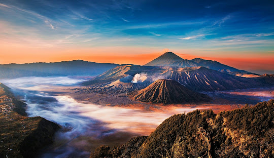

Pulau Bali
Pulau Bali adalah salah satu destinasi wisata terbaik di Indonesia. Dengan pantai-pantai yang indah, budaya yang kaya, dan keramahan penduduk lokal, Bali menawarkan pengalaman wisata yang tak terlupakan.

| No | Lokasi | Tujuan | Nama Tempat | Harga Mulai Dari |
|---|---|---|---|---|
| 1 | Tanggerang Selatan | Pulau Bali | Ubud, Bangli, Bali | Rp.500.000 - Rp.1.000.000 |
| 2 | Tanggerang Selatan | Kota Bintang | Daerah Istimewa Yogyakarta | Rp.200.000 - Rp.500.000 |
| 3 | Tanggerang Selatan | Pulau Lombok | Gunung Lombok | Rp.200.000 - Rp.1.000.000 |
Pulau Bali adalah salah satu destinasi wisata terbaik di Indonesia. Dengan pantai-pantai yang indah, budaya yang kaya, dan keramahan penduduk lokal, Bali menawarkan pengalaman wisata yang tak terlupakan.
Candi Borobudur adalah candi Budha terbesar di dunia. Terletak di Magelang, Jawa Tengah, candi ini merupakan salah satu keajaiban arsitektur kuno Indonesia.

Danau Tiga Warna Kelimutu adalah salah satu keajaiban alam di Flores, Nusa Tenggara Timur. Danau ini terkenal karena warna airnya yang bisa berubah-ubah.

Gunung Bromo merupakan salah satu gunung berapi terkenal di Indonesia. Terletak di Taman Nasional Bromo Tengger Semeru, gunung ini menawarkan pemandangan spektakuler dan trekking yang menantang.
